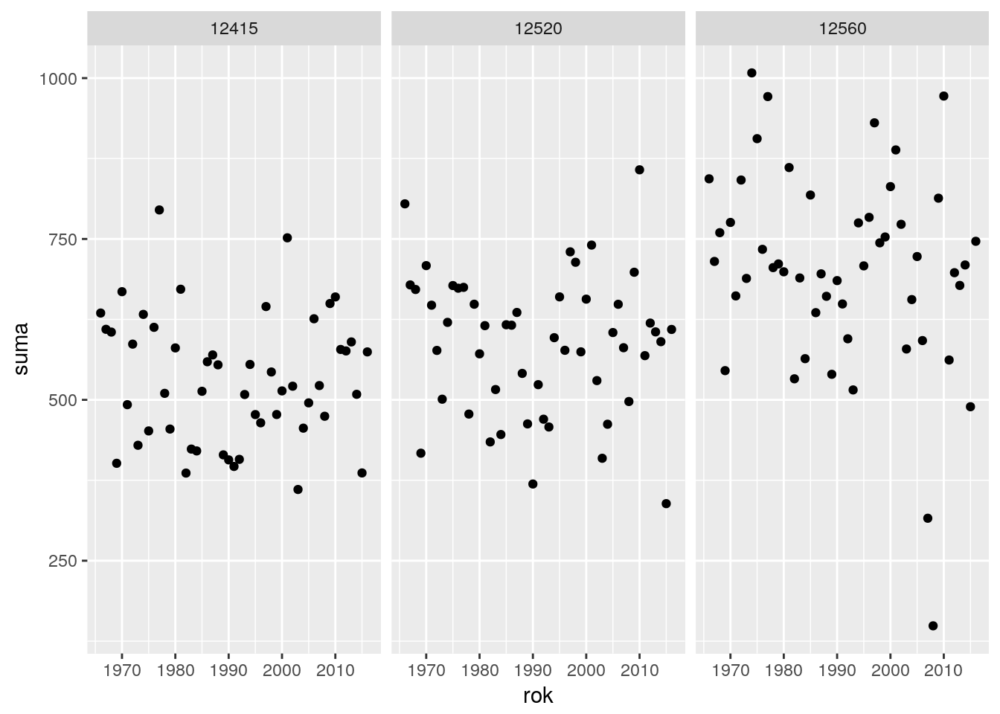
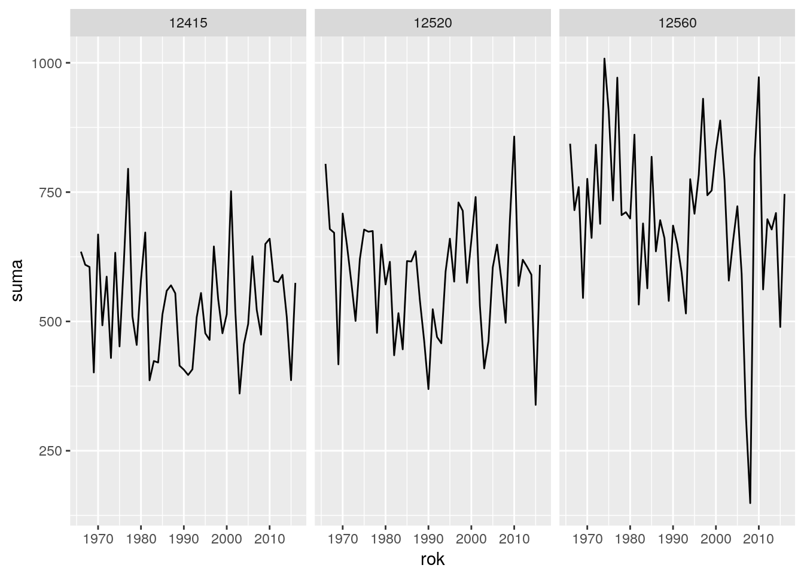
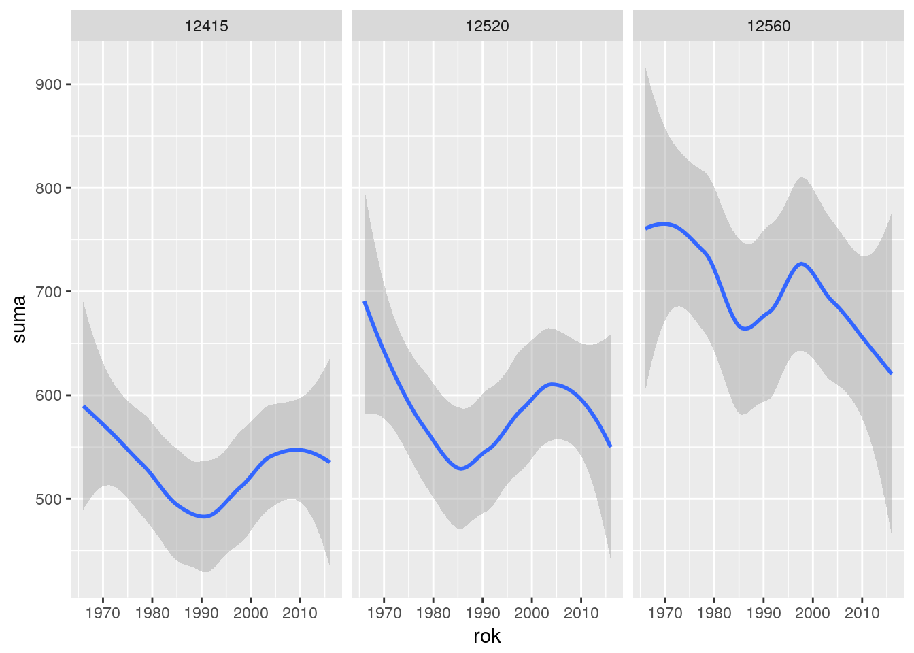

Rozdział 11 Grafika
Wstępne przetwarzanie danych jest tylko jednym z etapów pracy z danymi. Finalnym produktem przetwarzania są bardzo często wizualizacje tych danych w postaci graficznej. W przypadku R istnieje kilka silników graficznych, spośród których najbardziej popularny jest bazowy graphics oraz pakiet ggplot2 i lattice.
Poniżej wymieniono
11.1 graphics
Podstawowy silnik graficzny R.
Funkcje:
plot()+lines()
dane <- readRDS(gzcon(url("http://enwo.pl/przetwarzanie/dane/opady.rds")))
dane <- dane %>% group_by(rok=lubridate::year(dane$data), stacja) %>% summarise( suma=sum(wartosc, na.rm = T))
dane <- filter(dane, rok<2017) # ostatni rok jest niepelny
dane2 <- filter(dane,stacja=="12415")plot(x = dane2$rok, y = dane2$suma, type='l', main="tytuł", xlab='rok', ylab='suma [mm]', lwd=2)
lines(x = dane2$rok, y = jitter(dane2$suma,3000), type='l', col="red", lty=2, lwd=2)Rysunek 11.1: Przykład użycia funkcji plot i lines
boxplot()
tidyr::spread(dane, rok, suma) %>% .[,-1] %>% boxplot()Rysunek 11.2: Przykład użycia funkcji boxplot dla sumy opadów atmosferycznych na kilku stacjach
barplot()
tidyr::spread(dane2, rok, suma) %>% as.numeric() %>% .[-1] %>% barplot(., col="lightblue")Rysunek 11.3: Przykład użycia funkcji barplot dla sumy opadów atmosferycznych
image()persp()wireframe()
11.2 ggplot2
Grammar of graphics: https://github.com/tidyverse/ggplot2/wiki
Składnia zdecydowanie trudniejsza niż bazowego interfejsu graphics, jednak dająca w bardziej skrótowej postaci większe możliwości:
library(ggplot2)
ggplot(dane) #nic sie nie dzieje
ggplot(dane)+geom_point(aes(rok,suma))+facet_wrap(~stacja)
ggplot(dane)+geom_line(aes(rok,suma))+facet_wrap(~stacja)
ggplot(dane)+geom_smooth(aes(rok,suma),stat="smooth")+facet_wrap(~stacja)## `geom_smooth()` using method = 'loess'
tutorial wprowadzający do ggplot2: http://r-statistics.co/Complete-Ggplot2-Tutorial-Part1-With-R-Code.html
przykłady dobrych wykresów wraz z kodem do ggplot2: http://r-statistics.co/Top50-Ggplot2-Visualizations-MasterList-R-Code.html